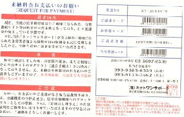

帰宅すると、机の上に見慣れない葉書が....（うん？）と思って手に取ると、同時に女房の怒りの声、「あなた、なにその葉書っ！」
わけもわからず読みだすと、タイトルは「未納料金お支払いのお願い」 （ほぇ？....）
貴殿が携帯電話でご利用になられた有料番組サイトの料金が未納となっており、日々延滞料金が発生しております。当社は運営業者様から、債権回収の依頼を正式に受理いたしました。
弊社で確認いたしましたところ、お客様の場合、ご利用されたサイトのログアウト（退会手続き）がお済みになっておりません。本状到着後、右記まで大至急お問い合わせください。
万が一、お支払いやご連絡なき場合は、裁判手続き、また金融機関の全停止処分、信用情報機関へのブラックリスト登録、さらに債権差し押さえの内容証明を勤務先に送付させていただきます。
最初はなんだか分からなかったが、途中まで読んで、（おお、いま流行りの架空請求、σ(-_-)にも来たか）話には聞いていたが、初めて実物を見ることができた。これが証拠の貴重な葉書。

そこで、女房に、「おい、これはいま流行の架空請求というやつだ」と話をしたが、全然信じない、というか疑いのまなざし
....(゜0゜)
そこで、「おまえなぁ、考えてみろ。ここに“携帯電話の有料サイト”って書いてあるだろう。おまえは携帯でメールなんぞやってるけど、σ(-_-)はネットはもちろんメールもやってない（って云うか、やり方も知らない....）そのσ(-_-)が、どうして有料サイトへ行けるんだ」と云ったら、やっと信じた。
そんな話をしながら、（それにしても、いくら請求が来たのかな？）と請求欄を見ると、そこには「下記にお問い合わせください」とあるだけだった。その「下記」とは、このイカサマ葉書の差し出した架空会社。そして担当者と称する人物の携帯番号も書いてある。もちろんこの会社番号なるところに電話しても、「いま出ているので、直接担当者の携帯に電話してください」というメッセージが流れるだけなんだろう。
この葉書、末尾に赤い字でこんなことが書いてあった。
「弊社は最近多発している悪質な架空請求の業者ではありません。貴殿が実際にご利用になった有料サイトの正規の回収業者です。もし心当たりがなくても、有料サイトにアクセスするだけで自動的に料金が発生するシステムがあります。今後はご注意してください」
メールも出来ない相手に有料サイト料金を請求するのが、悪質ではないとはおどろいたぞ。
いずれにしても雑談ネタが一つ増えたくらいに思っていたら、数日経って次男が「お父さんっ」、「おお、なんだ」と聞くと、こんな話。
数日前、ワン切りコールがあった。普段はもちろん無視している。しかしちょうドタバタしているとき（次男が大阪へ転勤することになって、大阪の会社からなにかと連絡電話があるとき）。何かその関係かと思って、あわてて電話してみた。するとなにやら「うっふん、あっはん」という声が。
なんだ、そんな事かと思ってすぐ切った。すると数日して、携帯がリーン。次男が出ると、「あなたは今年３月に当社の有料サービスを利用した。代金23,000円をただちに支払ってほしい。また３月15日から今日まで、一日500円の延滞料が発生しているが、すぐ払ってくれるなら延滞料は半額にマケておく」と云ったとか。
次男が、「自分はそんな記憶はない」というと、「みなさん、そう云います。しかしこうやって電話がつながっているとと云うことは、あなたが携帯の有料サービスを利用した証拠です。お支払いいただけないなら、あなたの住所も登録されているので、自宅まで取りに行くことになります」と云われたとか。
で、「そんなもん、ほっておけ」と云っておいたら、次の日、またかかってきたという。それでもほっておけばいいと思ったが、息子がうっとおしがる。またちょうど大阪へ転勤なので、それも機会と思って、携帯を変えてしまった。いずれにしても架空請求は、こんなにはびこっているんだと、ヘンなところで感心した。
|